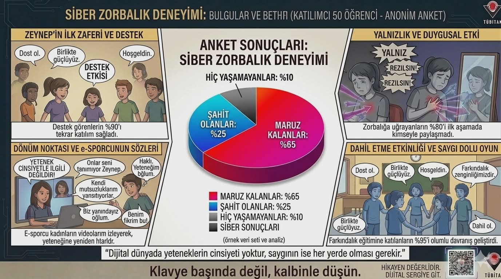

Sayılar değil, yaşanmışlıklar... Okulumuzdaki gerçek siber zorbalık hikayelerinden oluşan dijital farkındalık sergimize hoş geldin.
Sergiyi GezAşağıdaki kartlara tıklayarak öğrencilerimizin yaşadığı siber zorbalık olaylarını ve dönüm noktalarını inceleyebilirsiniz.
Siber zorbalık konusundaki deneyimlerinizi paylaşın ve güncel araştırma verilerimizi inceleyin.

TÜBİTAK Projesi Metodolojimiz
Öğrenciler arasında empati kurmak ve siber zorbalık konusunda farkındalık yaratmak.
Ortaokul öğrencilerimizin anonim hikayelerini derledik ve bu dijital sergide bir araya getirdik.
Daha güvenli, empatik ve bilinçli bir dijital okul iklimi oluşturmak.
Eğer sen veya bir arkadaşın siber zorbalığa maruz kalıyorsa, Güzel Konak İmam Hatip Ortaokulu rehberlik servisimizle iletişime geçmekten çekinme.
Rehberlik Servisine Ulaş